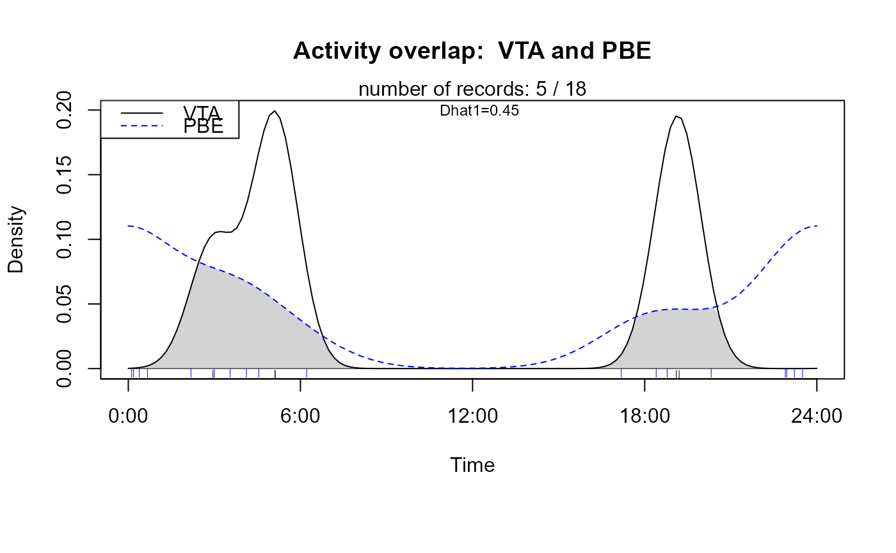
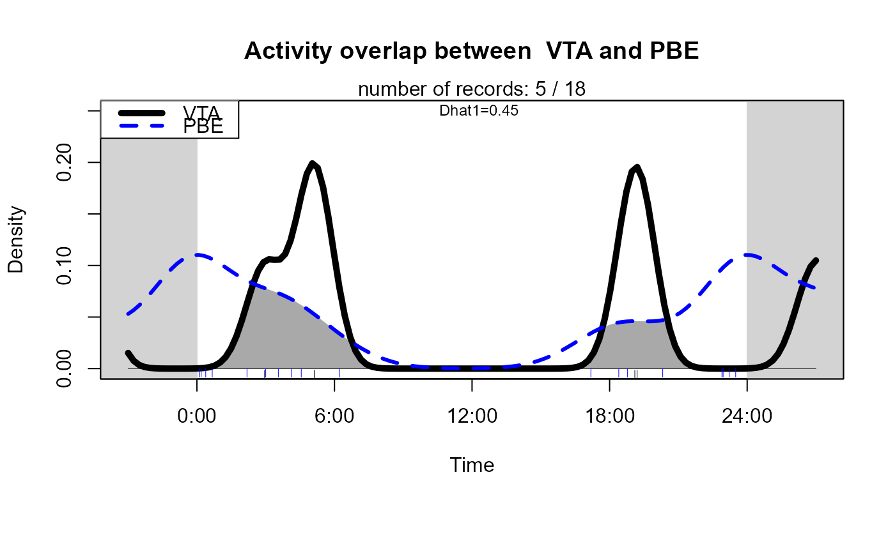

R/activityOverlap.R
activityOverlap.RdThis function plots kernel density estimates of two species' diel activity
data by calling the function overlapPlot from package
overlap. It further computes the overlap coefficient Dhat1 by calling
overlapEst.
activityOverlap(
recordTable,
speciesA,
speciesB,
speciesCol = "Species",
recordDateTimeCol = "DateTimeOriginal",
recordDateTimeFormat = "ymd HMS",
plotR = TRUE,
writePNG = FALSE,
addLegend = TRUE,
legendPosition = "topleft",
plotDirectory,
createDir = FALSE,
pngMaxPix = 1000,
add.rug = TRUE,
overlapEstimator = c("Dhat1", "Dhat4", "Dhat5"),
...
)data.frame. the record table created by
recordTable
Name of species 1 (as found in speciesCol of
recordTable)
Name of species 2 (as found in speciesCol of
recordTable)
character. name of the column specifying species names in
recordTable
character. name of the column specifying date and
time in recordTable
character. format of column
recordDateTimeCol in recordTable
logical. Show plots in R graphics device?
logical. Create pngs of the plots?
logical. Add a legend to the plots?
character. Position of the legend (keyword)
character. Directory in which to create png plots if
writePNG = TRUE
logical. Create plotDirectory?
integer. image size of png (pixels along x-axis)
logical. add a rug to the plot?
character. Which overlap estimator to return (passed
on to argument type in overlapEst)
additional arguments to be passed to function
overlapPlot
Returns invisibly the data.frame with plot coordinates
returned by overlapPlot.
... can be graphical parameters passed on to function
overlapPlot, e.g. linetype, linewidth,
linecol (see example below).
recordDateTimeFormat defaults to the "YYYY-MM-DD HH:MM:SS"
convention, e.g. "2014-09-30 22:59:59". recordDateTimeFormat can be
interpreted either by base-R via strptime or in
lubridate via parse_date_time (argument
"orders"). lubridate will be used if there are no "%" characters in
recordDateTimeFormat.
For "YYYY-MM-DD HH:MM:SS", recordDateTimeFormat would be either
"%Y-%m-%d %H:%M:%S" or "ymd HMS". For details on how to specify date
and time formats in R see strptime or
parse_date_time.
Please be aware that the function (like the other activity... function of this package) use clock time, not solar time. If your survey was long enough to see changes in sunrise and sunset times, this may result in biased representations of species activity.
Mike Meredith and Martin Ridout (2018). overlap: Estimates of
coefficient of overlapping for animal activity patterns. R package version
0.3.2. https://CRAN.R-project.org/package=overlap
Ridout, M.S. and
Linkie, M. (2009) Estimating overlap of daily activity patterns from camera
trap data. Journal of Agricultural, Biological and Environmental Statistics,
14, 322-337.
if(requireNamespace("overlap")) {
# load record table
data(recordTableSample)
# define species of interest
speciesA_for_activity <- "VTA" # = Viverra tangalunga, Malay Civet
speciesB_for_activity <- "PBE" # = Prionailurus bengalensis, Leopard Cat
# create activity overlap plot (basic)
activityOverlap (recordTable = recordTableSample,
speciesA = "VTA", # = Viverra tangalunga, Malay Civet
speciesB = "PBE", # = Prionailurus bengalensis, Leopard Cat
writePNG = FALSE,
plotR = TRUE
)
# create activity overlap plot (prettier and with some overlapPlot arguments set)
activityOverlap (recordTable = recordTableSample,
speciesA = speciesA_for_activity,
speciesB = speciesB_for_activity,
writePNG = FALSE,
plotR = TRUE,
createDir = FALSE,
pngMaxPix = 1000,
linecol = c("black", "blue"),
linewidth = c(5,3),
linetype = c(1, 2),
olapcol = "darkgrey",
add.rug = TRUE,
extend = "lightgrey",
ylim = c(0, 0.25),
main = paste("Activity overlap between ",
speciesA_for_activity, "and",
speciesB_for_activity)
)
}

